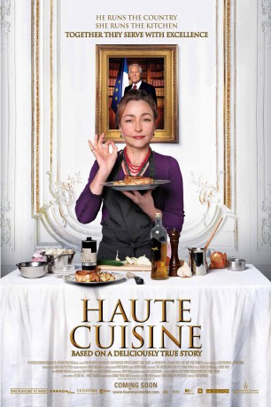
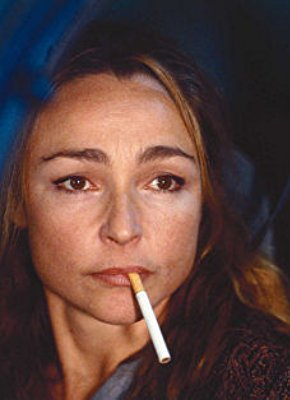
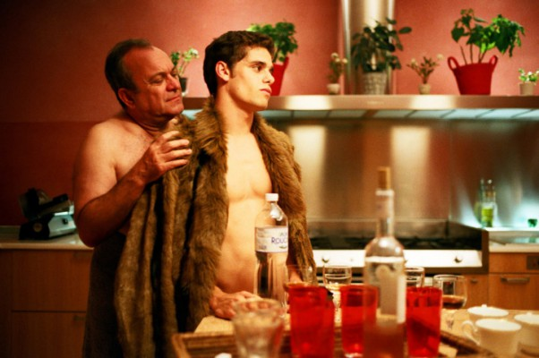
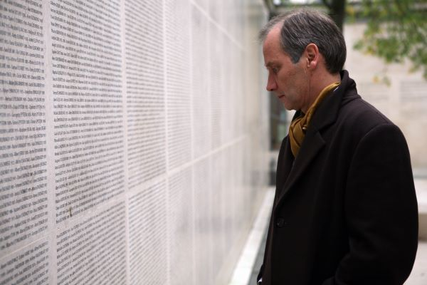
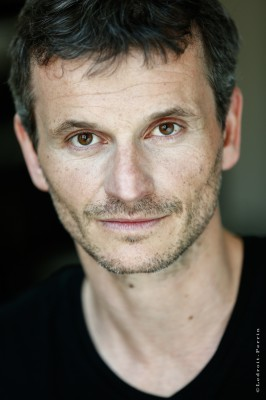

#7310 Die Köchin und der Präsident
 
 IMDB-Wertung: 6.4 / 10
IMDB-Wertung: 6.4 / 10  Metascore: 0
Metascore: 0 
Hortense Laborie is a celebrated chef living in the Perigord region. To her great surprise, the President of the Republic appoints her as his personal cook. She accepts reluctantly but once she has accepted her nomination, Hortense works her heart and soul to produce both a stylish and authentic cuisine. For a while, she manages to impose herself thanks to her sturdy character and despite the jealousies she arouses among the other chefs. For a while only, unfortunately for her and for... the President.
Jahr: 2012
Dauer: 94 Minuten
FSK: 0
Land: Frankreich Studio: Alamode FilmTonspuren:
Untertitel:
Auflösung: 1080p (1920x808) Größe: 4997 MB
Genre: Komödie, Biographie
Regisseur: Christian Vincent
Drehbuch: Etienne Comar
Soundtrack:
Darsteller:
-  Catherine Frot als Hortense Laborie
-  Arthur Dupont als Nicolas Bauvois
-  Hippolyte Girardot als David Azoulay
- Thomas Chabrol als Le directeur de cabinet du préfet
- Arly Jover als La journaliste Mary
- Joe Sheridan als Le photographe John
-  Nicolas Beaucaire als Le docteur Kramer
- Jean-Luc Ormières als L'inconnu
- Jean d'Ormesson als Le Président
- Jean-Marc Roulot als Jean-Marc Luchet
- Philippe Uchan als Coche-Dury
- Laurent Poitrenaux als Jean-Michel Salomé
- Hervé Pierre als Perrières
- Brice Fournier als Pascal Lepiq
- Roch Leibovici als Olivier Moncoulon
- Louis-Emmanuel Blanc als Arnaud Fremier
- David Houri als David Epenot
- Nicolas Chupin als Anthony
- Pierre Moure als Guillaume
- Steve Tran als Grégory
- Manuel Le Lièvre als Loïc Fournon
- Richard Morgiève als Jacques Limozin
- Catherine Davenier als Madame Arvelet
- Charlotte Clamens als La diététicienne
- Jacques Pieri als Le radiologue
- Jean-Marc Boisset als Le planton
- François Lescurat als Le chef du protocole
- Lionel Tavera als L'aide de camp du Président
- Philippe Cheytion als Le secrétaire de cabinet
- François Errant als Le responsable sécurité
- Olivier Dazat als L'homme satisfait
- Jonathan Bizet als Le maître d'hôtel de permanence
- Thierry Angelvi als L'huissier Perrières
- Sylvie Degryse als La secrétaire Perrières
- Eric Malo als Le chef pâtissier
- Julien Renaud als Philippe - le jeune serveur
- Nassim Boutelis als Abdel - le 1er commis
- Arthur Orcier als Jonathan - le 2e commis
- Alix de Montille als La sommelière
- Alain Debruyne als L'imprimeur
- Charlou Reynal als Louis
- Fabien Martin als Le maraîcher
- Sébastien Czupta als Un serveur de la cuisine privée
- Hugo Malpeyre als Le chef de rang de l'Elysée
- Sho Ashizawa als Un commis de la cuisine cuisine centrale
- Balthazar Staskiewicz als Un commis de la cuisine cuisine centrale
- Déborah Révy als (scenes deleted
- Fabrice Colson als Un invité au cocktail , uncredited
- Nathalie Vignes als La fleuriste du palais , uncredited
Datei: X:\2012(G-M)\Köchin und der Präsident, Die (2012, FSK0, 1920x808).mkv seit 16.10.2017
Festplatte: HD 2012(A-M)
 Es gibt insgesamt 112 Filme in der Gruppe '2012(G-M)'
Es gibt insgesamt 112 Filme in der Gruppe '2012(G-M)'